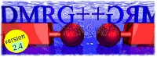

 DMRG++ is a free and open source implementation of the DMRG algorithm. (The DMRG algorithm was developed by White; original references are White, 1992 and White, 1993. More information about the DMRG can be found, for example, here.) DMRG++ emphasizes generic programming using C++ templates, friendly user-interface, and as few software dependencies as possible. DMRG++ tries to make writing new models and geometries easy, fast and bug-free by using a generic DMRG engine.
$ cd someDirectory/ $ git clone https://github.com/g1257/PsimagLite.git $ git clone https://github.com/g1257/dmrgpp.git $ cd PsimagLite/lib $ perl configure.pl (You may now edit Config.make) $ make $ cd ../../ $ cd dmrgpp/src $ perl configure.pl (You may now edit Config.make) $ make $ ./dmrg -f ../TestSuite/inputs/input0.inp $ ./toolboxdmrg -f ../TestSuite/inputs/input0.inp -a energies
External Review at MateriApps: http://ma.cms-initiative.jp/en/application-list/dmrg